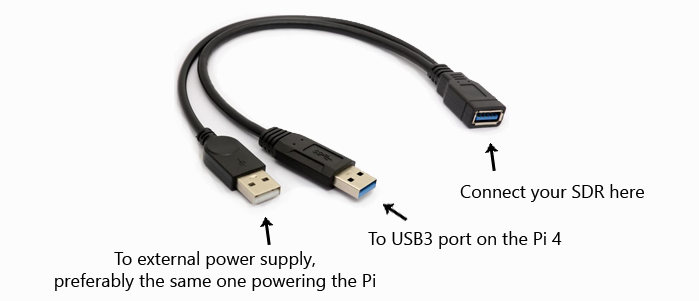
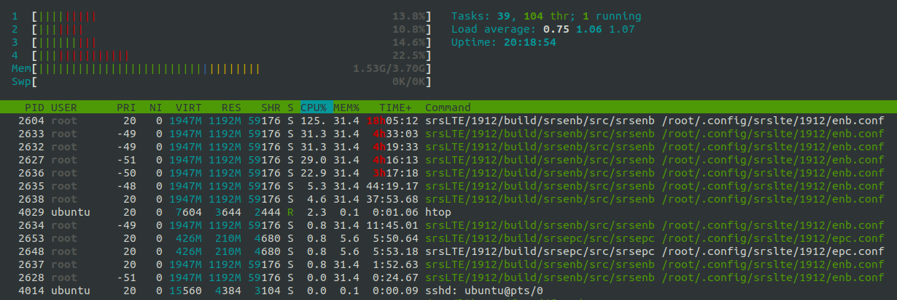

srsRAN 4G on Raspberry Pi 4
Introduction
srsRAN 4G is a 4G and 5G software radio suite. The 4G LTE systems includes a core network and an eNodeB. Most people in the srsRAN 4G community run the software on high performance computers, however the eNodeB can also be run on the low power Raspberry Pi 4 with a variety of SDRs.
The concept of an ultra low cost, low power and open source SDR LTE femtocell has a lot of people excited!

Note
While not impossible, running srsUE on a small embedded device is more difficult due to increased processing requirements for synchronisation and blind signal decoding.
Pi4 eNodeB Hardware Requirements
The setup instructions provided below have been tested with a Raspberry Pi 4B /4GB rev 1.2. It has not been tested with the rev 1.1 board, boards with 2GB of RAM or alternative operating systems. The Ubuntu image can be downloaded from the official Ubuntu website. You can visually identify your Pi4 hardware revision – this doc from Cytron shows you how.
This setup has been tested with a USRP B210, a LimeSDR-USB and a LimeSDR-Mini.
Note
When using the USRP B210, you can create a 2x2 MIMO cell with srsenb. It is also possible to run the srsEPC core network on the Pi too.
When using either of the LimeSDRs, you can only create a 1x1 SISO cell with srsenb. The core network must be run on a separate device.
Due to the power requirements of the SDRs, you must use an external power source. This can be achieved with a ‘Y’ cable, such as this:

Software Setup
At the time of writing this appnote, it has been tested with the srsLTE 19.12 release on top of a Ubuntu Server 20.04 LTS aarch64 image. The following install instructions will apply to this configuration. At the end of the document, there are some notes on how to install the latest srsRAN 4G release on top of the latest Ubuntu Server 22.04 LTS aarch64 image.
First thing is to install the SDR drivers and build srsRAN 4G. UHD drivers are required for USRPs, SoapySDR/LimeSuite are required for the LimeSDRs.
sudo apt update
sudo apt upgrade
sudo apt install cmake
UHD Drivers can be installed with:
sudo apt install libuhd-dev libuhd3.15.0 uhd-host
sudo /usr/lib/uhd/utils/uhd_images_downloader.py
## Then test the connection by typing:
sudo uhd_usrp_probe
SoapySDR and LimeSuite can be installed with:
git clone https://github.com/pothosware/SoapySDR.git
cd SoapySDR
git checkout tags/soapy-sdr-0.7.2
mkdir build && cd build
cmake ..
make -j4
sudo make install
sudo ldconfig
sudo apt install libusb-1.0-0-dev
git clone https://github.com/myriadrf/LimeSuite.git
cd LimeSuite
git checkout tags/v20.01.0
mkdir builddir && cd builddir
cmake ../
make -j4
sudo make install
sudo ldconfig
cd ..
cd udev-rules
sudo ./install.sh
## Then test the connection by typing:
LimeUtil --find
LimeUtil --update
SoapySDRUtil --find
Next, srsRAN can be compiled:
sudo apt install libfftw3-dev libmbedtls-dev libboost-program-options-dev libconfig++-dev libsctp-dev
git clone https://github.com/srsRAN/srsRAN_4G.git
cd srsRAN_4G
git checkout tags/release_19_12
mkdir build && cd build
cmake ../
make -j4
sudo make install
sudo ldconfig
## copy configs to /root
sudo ./srsran_4g_install_configs.sh user
And finally, modify the Pi CPU scaling_governor to ensure it is running in performance mode:
sudo systemctl disable ondemand
sudo apt install linux-tools-raspi
sudo nano /etc/default/cpufrequtils
* insert:
* GOVERNOR="performance"
## reboot
sudo cpupower frequency-info
* should show that the CPU is running in performance mode, at maxiumum clock speed
Pi4 eNodeB Config
During testing, the following eNodeB config options have been shown to be stable for 24hr+ when running with the USRP B210, and stable for 2hr+ when running with the LimeSDRs, so should be a good starting point for you.
The Pi4 eNodeB has been tested with a 3MHz wide cell in LTE B3 (1800MHz band), DL=1878.40 UL=1783.40. This sits inside the UK’s new “1800MHz shared access band”, for which you can legally obtain a low cost, low power shared access spectrum licence from Ofcom if you are working in the UK.
Changes to default enb.conf for USRP B210:
sudo nano /root/.config/srsran_4g/enb.conf
[enb]
mcc = <yourMCC>
mnc = <yourMNC>
mme_addr = 127.0.1.100 ## or IP for external MME, eg. 192.168.1.10
gtp_bind_addr = 127.0.1.1 ## or local interface IP for external S1-U, eg. 192.168.1.3
s1c_bind_addr = 127.0.1.1 ## or local interface IP for external S1-MME, eg. 192.168.1.3
n_prb = 15
tm = 2
nof_ports = 2
[rf]
dl_earfcn = 1934
tx_gain = 80 ## this power seems to work best
rx_gain = 40
device_name = UHD
device_args = auto ## does not work with anything other than 'auto'
Changes to default enb.conf for LimeSDR-USB or LimeSDR-Mini:
sudo nano /root/.config/srsran_4g/enb.conf
[enb]
mcc = <yourMCC>
mnc = <yourMNC>
mme_addr = <ipaddr> ## IP for external MME, eg. 192.168.1.10
gtp_bind_addr = <ipaddr> ## local interface IP for external S1-U, eg. 192.168.1.3
s1c_bind_addr = <ipaddr> ## local interface IP for external S1-MME, eg. 192.168.1.3
n_prb = 15
tm = 1
nof_ports = 1
[rf]
dl_earfcn = 1934
tx_gain = 60 ## this power seems to work best
rx_gain = 40
device_name = soapy
device_args = auto ## does not work with anything other than 'auto'
Changes to default configs for srsEPC core network:
sudo nano /root/.config/srsran_4g/epc.conf
[mme]
mcc = <yourMCC>
mnc = <yourMNC>
mme_bind_addr = 127.0.1.100 ## or local interface IP for external S1-MME, eg. 192.168.1.10
sudo nano /root/.config/srsran_4g/user_db.csv
* add details of your SIM cards
Note
When running srsEPC on an external device (eg. another Pi), you must open incoming firewall ports to allow the S1-MME and S1-U connections from srsENB.
S1-MME = sctp, port 36412 || S1-U = udp, port 2152
If using iptables,
sudo iptables -A INPUT -p sctp -m sctp --dport 36412 -j ACCEPT
sudo iptables -A INPUT -p udp -m udp --dport 2152 -j ACCEPT
Running the Pi4 eNodeB
Launch the software in separate ssh windows or using screen. Remember to use an external power source for your SDR. The first time you run the srsENB software, you will need to wait a few minutes for it to finish setting up. After the first time it will start without delay.
Launch Pi4 eNodeB:
sudo srsenb /root/.config/srsran_4g/enb.conf
Note
Between runs when using the LimeSDR-USB, you sometimes need to physically unplug and reconnect the SDR to power cycle it.
Launch core network (on separate device, or on the Pi4 eNodeB when using USRP B210):
sudo srsepc /root/.config/srsran_4g/epc.conf
sudo /usr/local/bin/srsepc_if_masq.sh eth0
The following htop screenshot shows the resource utilisation when running the software on the Pi 4B /4GB RAM with x2 UEs attached to the USRP B210 cell. The srsRAN 4G software has been running here for more than 18 hours without any problems. Only half of the RAM is used, and the CPU cores are sitting at around 25%. There is a chance, therefore, that this software configuration will work with the Pi 4B /2GB RAM version, and maybe also on other recent Arm based dev boards. If you can get a working cell going with alternative hardware, let the srsran-users mailing list know!

Known issues
For bandwidths above 6 PRB it is recommended to use srsRAN 4G 19.12 instead of the most recent release 20.04. We have identified the issue in the PRACH handling mainly affecting low-power devices. The fix will be included in the upcoming release.
Running on Ubuntu 22.04 LTS
As of version 22.10, srsRAN 4G can be compiled without modification on Ubuntu 22.04 LTS. However, the new Ubuntu 22.04 LTS image differs slightly in terms of kernel config options. It also misses the SCTP kernel module in the default configuration. The latter can be installed with:
sudo apt-get install linux-modules-extra-raspi
The second required change to pass all tests successfully is to increase the RLIMIT_MEMLOCK setting in /etc/security/limits.conf. A detailed description of the underlying change is provided here and information about RLIMIT_MEMLOCK can be found here. To lift the limit, add the following line to /etc/security/limits.conf.
* - memlock unlimited
With those changes srsRAN 4G should compile and shoud pass all tests on a Ubuntu 22.04 LTS aarch64 system.